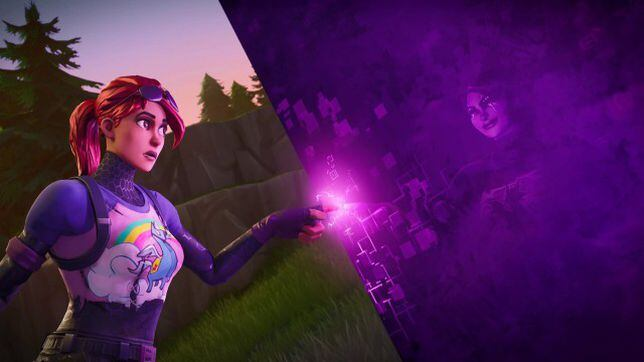

Temp. 5
La fractura al cel va submergir l'illa en el caos, llançant alguns dels seus estimats punts de referència a les terres més enllà. Els que miren l'illa des de sota envien Enforcers per restablir l'equilibri tornant aquests objectes, fent que els mons xoquin. Trossos de terra s'hi filtren per accident, com ara sorra, víkings i golf, i més tard, el mal també ho fa, però amb propòsit.

Se'n va de viatge per carretera mentre descobreix l'illa i les moltes persones que hi van ser arrastrades dels seus mons abans que ell. Amb cada segon del viatge per carretera de la tripulació, la bretxa de dalt comença a reduir-se; fins que la foscor veu l'oportunitat.